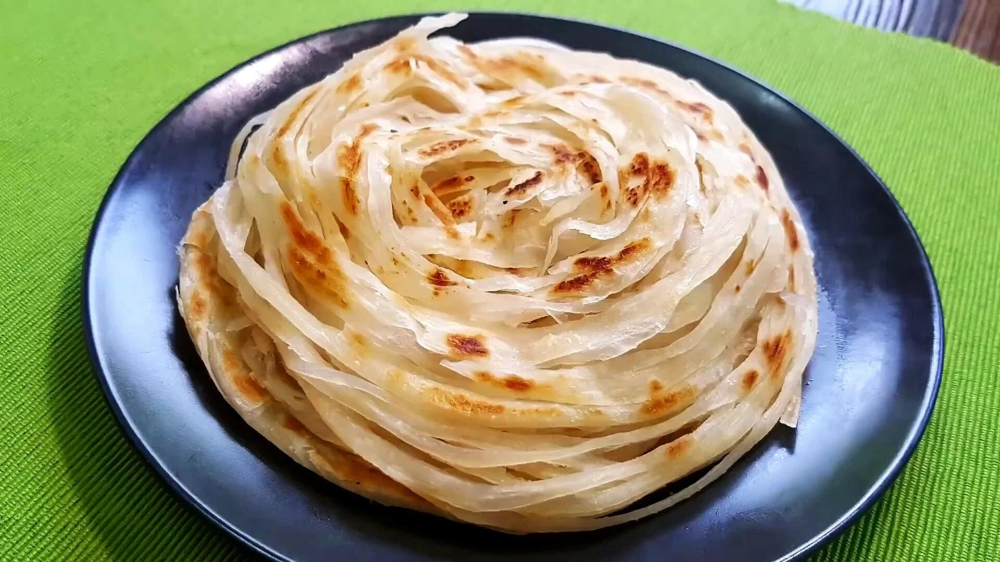

Our Menu
.jpg)
Idly
5.00
Idli is a popular South Indian dish made from fermented rice and black gram batter, which is steamed to create soft, fluffy, and spongy rice cake
.jpg)
Dosa
20.00
Dosa is a thin, crispy South Indian crepe made from fermented rice and lentil batter, commonly served with various chutneys and sauces.
.jpg)
Chapati
10.00
Chapati is a soft, unleavened Indian flatbread made from whole wheat flour, commonly served as a staple accompaniment to various dishes.
.jpg)
Veg Meal
150.00
A vegetarian meal comprises dishes made exclusively from plant-based ingredients, excluding meat, fish, and poultry, while offering a variety of flavorful and nutritious options
.jpg)
Non-Veg Meal
250.00
A non-vegetarian meal includes dishes prepared from animal sources like meat, poultry, and seafood, offering a diverse range of flavors.
.jpg)
Biriyani
150.00
Biryani is a flavorful and aromatic South Asian dish made by layering fragrant rice with meat or vegetables, enriched with spices and herbs.

Parotta
10.00
Parotta is a flaky and layered Indian bread made from kneaded dough, typically enjoyed with curries and gravies.
.jpg)
Fried Rice
100.00
Fried rice is a savory dish originating from Asian cuisine, made by stir-frying cooked rice with various ingredients such as vegetables, eggs, and often meat or seafood.